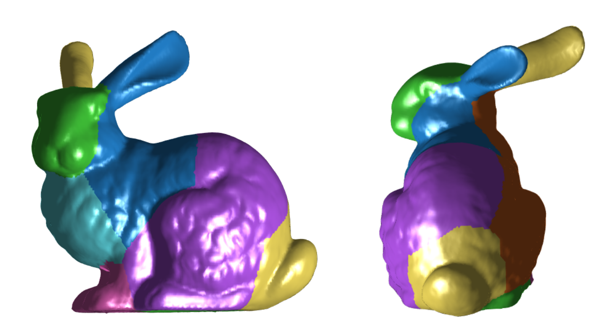
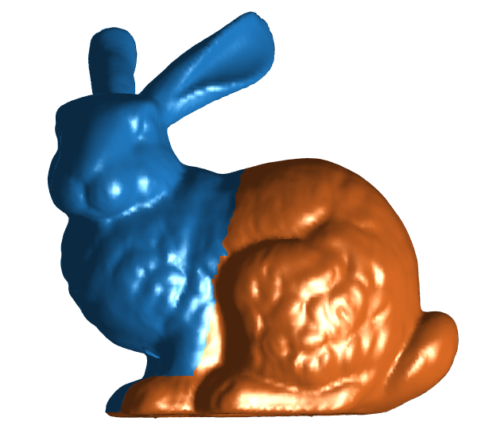
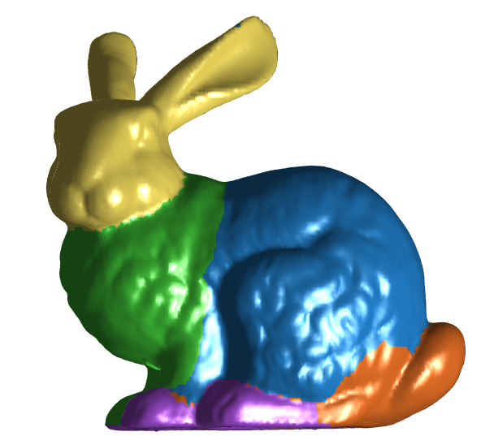
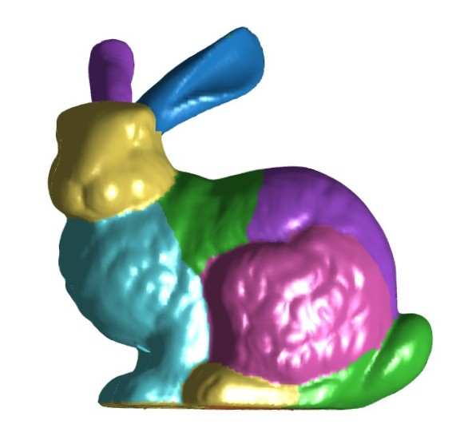
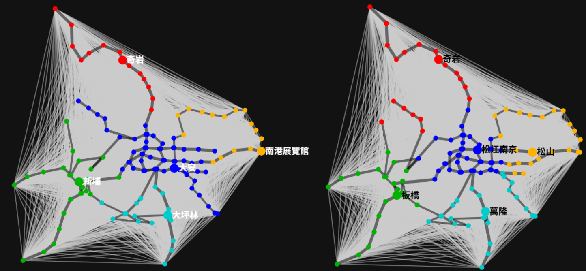
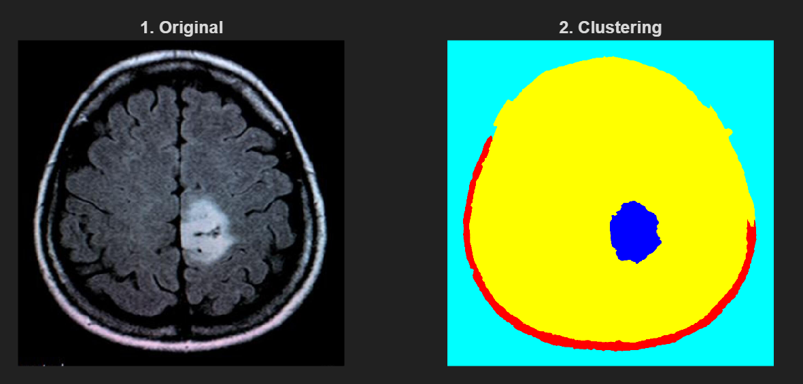
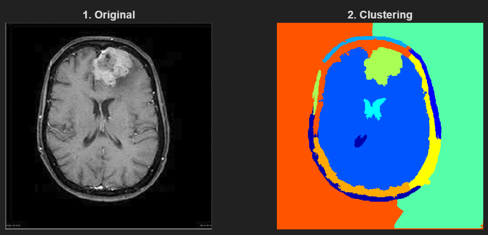
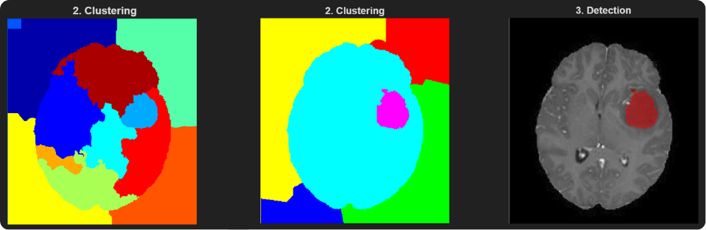

Breaking the boundaries of linear clustering through structural similarity, feature extraction engineering, and spectral transformation to redefine data analytics.
Authors: Chun-Hao, Wen ; Hsin-Yi, Ko
Advisor: Prof. Shih-Feng, Hsieh
In the field of machine learning, real-world data rarely falls into simple linear or spherical distributions. If traditional clustering methods like K-means are applied directly, they often fail because they are constrained by the raw data type, leading to suboptimal clustering results.
To overcome this, we introduce Graph-based methodologies. The core philosophy is: capture the intrinsic structure of the data and establish a concept of "similarity" based on that structure. Through this approach, similar data points are pulled closer together within the graph space, facilitating highly logical and physical clustering.
To construct a Graph Laplacian, we must first map our data into a graph structure using a specific perspective. This involves three critical elements:
To compute weights, we utilize Gaussian Similarity. The closer the distance or the more similar the features between two nodes, the larger the computed weight:
Once we obtain the similarity matrix \(W\), we calculate the sum of similarities for each node to form a diagonal matrix known as the Degree Matrix (\(D\)). Finally, subtracting the similarity matrix from the degree matrix yields a symmetric, positive semi-definite Laplacian Matrix (\(L\)):
This matrix perfectly encapsulates the geometric and structural features of the entire dataset, serving as the most crucial foundation for our subsequent "spectral transformation."
The concept of Spectral Clustering is highly intuitive. Think of it as searching for the perfect "spatial transformation" and "clustering mechanism." Instead of making hard cuts in a complex, high-dimensional raw space, it utilizes the Graph Laplacian to map data into a low-dimensional feature space, allowing entangled non-linear data to separate naturally.
The core task of spectral clustering is to find an optimal indicator vector \(v\) that minimizes the following quadratic form. We can conceptualize this equation as the "Cost Function" of clustering:
Here, \(w_{i,j}\) represents the similarity between two data points, while \(v_i\) and \(v_j\) represent their new positions after clustering:
According to linear algebra, the solution to this cost optimization problem directly corresponds to the Eigenvectors of the Laplacian matrix \(L\). We sort all eigenvalues from smallest to largest and analyze them deeply:
The final clustering step is straightforward: we select the top \(k\) eigenvectors (e.g., the 2nd to the \((k+1)\)-th), arrange them as column vectors to form a new matrix. The \(i\)-th row of this matrix becomes the new, low-dimensional coordinate for the \(i\)-th data point in a completely new feature space. Finally, we simply run the traditional K-means algorithm on this highly optimized, structurally clear coordinate system to perfectly accomplish non-linear data clustering!
If traditional algorithms are applied directly to raw, massive datasets (like all pixels in an image or all vertices of a 3D model), they are highly susceptible to noise, and matrix computations will explode geometrically. The breakthrough in our research lies in customized feature engineering trade-offs and optimizations. We designed exclusive feature extraction protocols for different data types:
During our practical MRI brain tumor analysis, we discovered that normal physiological structures in the brain (like sulci and ventricles) inherently possess extremely high edge contrast. If we blindly incorporate the "Gradient" features commonly used in traditional image processing, the algorithm gets severely misled by the sharp edges of normal healthy tissues.
Therefore, we made a crucial engineering decision: decisively discard gradient features. By allowing the feature space to be entirely dominated by "Brightness" and "Regional Variance," we successfully bypassed structural traps, focusing entirely on capturing the blurred, infiltrative boundaries typical of tumors.
Because our extracted features contain varying physical meanings and numerical scales (e.g., the scale of spatial coordinates differs entirely from normal vectors), we applied strict Row Normalization to all features before they enter the Graph Laplacian. This prevents features with large absolute values from "dominating" the Gaussian similarity computation, ensuring that every dimensional feature contributes fairly and stably to the final clustering outcome.
To validate the algorithm's resolution capabilities in pure geometric space, we tested it on the famous 3D model introduced by Stanford University in 1994—the Stanford Bunny. The raw data we obtained was extremely rudimentary, consisting purely of point coordinates in \(\mathbb{R}^3\), encompassing over 30,000 vertices and nearly 70,000 triangular faces.
Intuitively, the simplest clustering approach is to use the "incenter coordinates" of the triangular faces and apply K-means clustering using traditional Euclidean distance. However, empirical results show that this approach is highly inaccurate (as seen in Figure 3), because it completely ignores the spatial geometric undulations and structural features represented by surface normal vectors.
As described in our feature engineering section, we shifted to a 9D feature vector. Furthermore, we adjusted the denominator parameter \(\sigma\) in the Gaussian Kernel. We calculate the "radian difference" between unit normal vectors of two faces and take the average of all radian differences. To prevent negatives or zeros, we take the maximum between this value and the computer's minimum precision "eps":
Core Concept: This dynamic \(\sigma\) defines how far apart a relationship can be while still being considered "connected." It filters out noise-like micro-geometric connections on one hand, and effectively amplifies the gap between similarities on the other, making cluster boundaries significantly clearer.

Once we transition the data into the new feature space constructed by the Laplacian matrix, the clustering results exhibit astonishing detail and geometric adaptability as we increase the number of eigenvectors used:



Conclusion: Experiments confirm that the more eigenvectors utilized, the finer the clustering results. It precisely renders the intrinsic geometric shapes of complex objects, successfully breaking the limitations of traditional linear clustering!
We applied the Graph Laplacian to urban transportation networks, innovatively utilizing "Fare Price" as the Edge distance between two stations, and assigning weights via Gaussian Similarity (with self-distance at transfer stations set to 1).

Comparisons reveal that, except for the central region, the clustering results of fare and Euclidean distance are nearly identical, proving fare is an excellent proxy for distance. More intriguingly, when we increase the cluster count from K=4 to K=6, Taipei's three main cores (Taipei Main Station, Xinyi, Neihu) are cleanly separated into independent blocks.
The originally strong links of a massive core are severed. In terms of the cost function, this means "breaking off from these sub-centers is the lower-cost choice." This mathematically validates a hard social science theory: Taipei is transitioning from a monocentric to a polycentric city.
| Urban Characteristic | Monocentric City | Polycentric City |
|---|---|---|
| Urban Structure | Dominated by a single CBD (e.g., early Taipei Main Station), functions highly concentrated. | Central functions spill over; sub-centers (Xinyi/Neihu) rise to replace the single core. |
| Network Topology | Purely radial, converging entirely towards the city center. | Radial + Circular + Cross-district links, satisfying decentralized demands. |
In medical imaging, having tens of thousands of pixels causes computational explosions. We introduced the SLIC Superpixels algorithm to aggregate the image into roughly 400 blocks acting as Nodes, defining Edges by "spatial adjacency."
We combined Gaussian weights with "Brightness": adjacent blocks with similar brightness yield higher weights, while large boundary disparities cause weights to approach zero. This naturally generates strong connections within the same physiological structures.


In our current upgraded phase, we officially introduced the customized feature extraction functions discussed earlier. Previously, the raw method required setting up to 7 clusters (excluding background) to separate the brain tumor from surrounding complex tissues. After deep optimization via feature engineering, the algorithm now possesses outstanding geometric and shape awareness.
Currently, we only need to set 2 clusters (excluding background, directly bisecting into "Tumor" and "Non-Tumor") to perfectly and precisely isolate the tumor region, drastically streamlining the computational structure and enhancing diagnostic utility.
In this breakthrough, "Circularity" played an incredibly vital role. Because brain tumors (especially malignant ones) typically exhibit irregular, infiltrative growth with rugged edges, while certain normal brain structures or noise-induced bright spots usually have smoother or elongated geometries. To give the algorithm the ability to "automatically recognize shapes," we introduced the circularity formula to quantify this feature:
According to this geometric formula, the closer a shape is to a perfect circle, the closer its circularity is to 1. Conversely, the more elongated the shape, or the more irregular its edges (causing the perimeter in the denominator to spike), the circularity value drops sharply toward 0. We combined Brightness and Circularity at a 4:6 ratio, enabling the algorithm to not only see "light and dark" but also "feel shapes." This successfully filters out high-brightness but elongated non-tumor tissues (like blood vessels or sulci), precisely locking onto the true tumor region.
In the future, we plan to expand from 2D to 3D imaging, incorporating more textural features or lightweight machine learning models, allowing this Graph Laplacian-based segmentation technology to deliver immense assistive value in actual clinical diagnostics.
